Points, Paychecks, and Performance
Exploring the Financial Architecture of NBA Roster Construction
Which performance metrics most influence NBA contracts? Which team strategies actually win games? Using 3,176 player-seasons across 14 years, three OLS regression models examine how the 2023 CBA reshaped salary allocation, positional value, and the offensive vs. defensive balance of winning rosters.
How the 2023 CBA Changed Everything
Each successive CBA has layered new complexity onto team-building decisions. The 2023 CBA introduced stricter financial penalties and expanded salary cap restrictions, making roster construction more constrained than ever. This paper asks: which types of players earn larger salary shares, and which team strategies most reliably produce wins?
Data was sourced from Basketball-Reference and RealGM, covering the 2011-12 through 2024-25 seasons. The sample was filtered to players averaging at least 41 games and 18.9 minutes per game, isolating rotation-level contributors whose salaries reflect intentional roster decisions.
What the Data Shows Before Modeling
The NBA's average Offensive Rating rose from 104.53 (2011-12) to 114.95 (2023-24), reflecting the league-wide shift toward pace and three-point volume. Season-adjusted metrics are used throughout to ensure cross-year comparability.
Scoring and Salary Allocation
Points per game has the strongest positive correlation with salary share. Notable outliers include prime James Harden consuming 25-30% of Houston's cap, while Luka Doncic and Trae Young on rookie deals dramatically outperformed their pay, illustrating the value of developing stars before their first big contract.
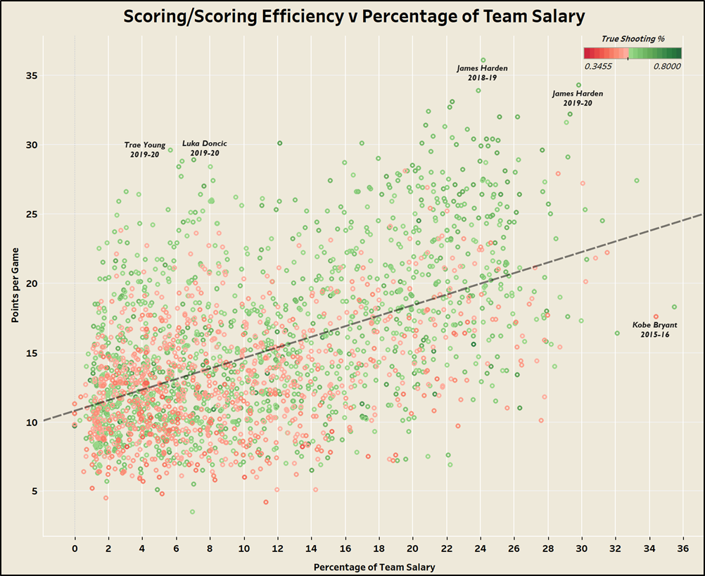
Figure 2. Points per Game vs Percentage of Team Salary. Color indicates True Shooting %. The strong positive trend confirms scoring volume as the primary driver of contract size.
Defensive Impact and Salary Allocation
Defense correlates with salary, but far more weakly than offense. Players like Kawhi Leonard, Ricky Rubio, and Dyson Daniels sit in the top-left quadrant: elite steal rates on rookie-scale pay. This sets up a recurring theme: front offices consistently reward scoring more reliably than defense.
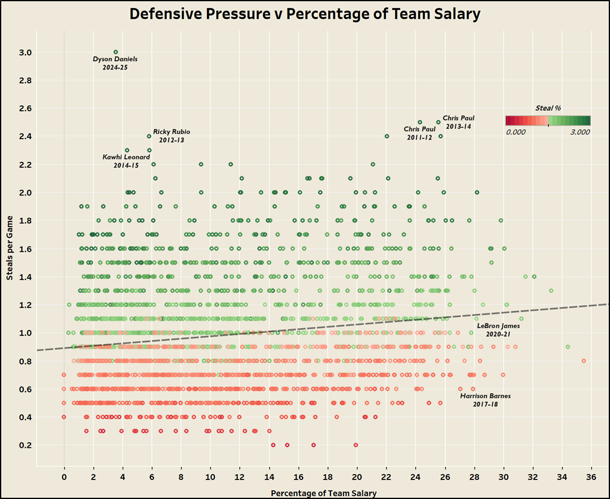
Figure 4. Steals per Game vs Percentage of Team Salary. The weaker positive trend reflects that defensive impact is less consistently rewarded in contract negotiations.
Advanced Metrics and Salary Allocation
Both OBPM and DBPM correlate positively with salary, but OBPM shows a stronger relationship. Draymond Green's elite DBPM on a relatively modest deal is a clear example of how undervalued defensive impact enabled Golden State's sustained success.
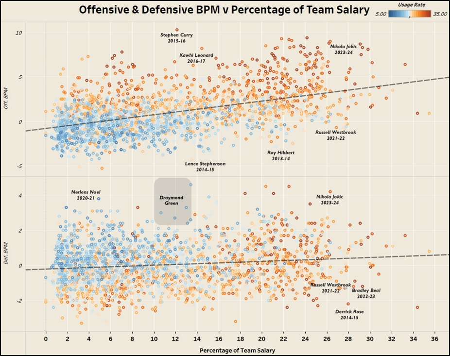
Figure 9. Offensive and Defensive BPM vs Percentage of Team Salary. OBPM (top) shows a stronger salary correlation than DBPM (bottom).
How Positional Value Has Shifted
The market for positions has moved dramatically. Point guard salary share rose from 7.44% (2011-15) to 10.69% (2020-25), while center share fell from 11.75% to 9.74% over the same span, reflecting the league-wide embrace of pace-and-space offenses.
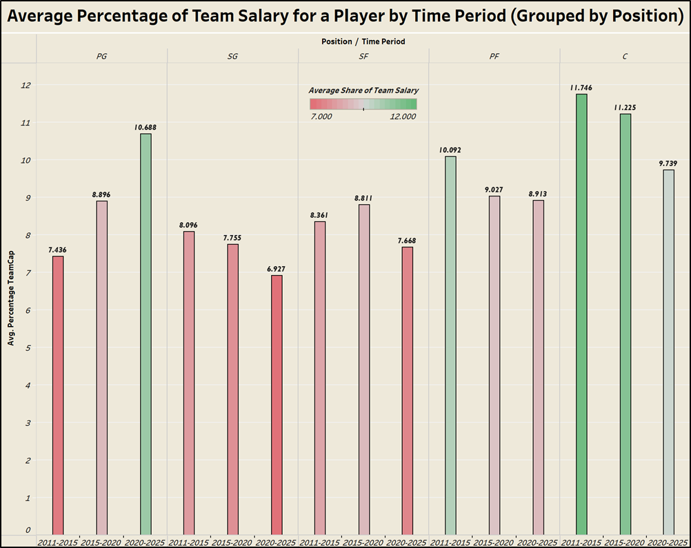
Figure 7. Average Salary Share by Position across three time periods (2011-2015, 2015-2020, 2020-2025).
Team Spending vs Win Percentage
Net salary spending (relative to league average) plotted against win percentage across all 30 franchises reveals distinct philosophies: deliberate underspending during rebuilds, aggressive overspending in win-now windows, and everything in between.
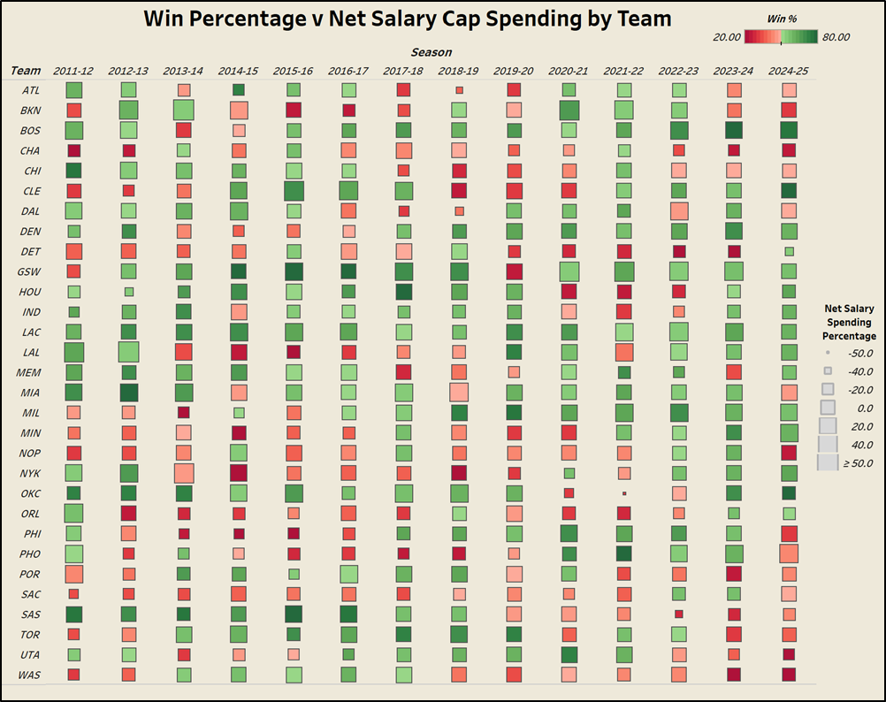
Figure 11. Win Percentage vs Net Salary Cap Spending for all 30 NBA teams across 14 seasons. Green indicates winning records, red indicates losing records.
Team Age, Roster Construction, and Sustained Success
The average rotational player age across this sample was 26.4 years. The following panels highlight contrasting roster philosophies and their outcomes. The LA Clippers, consistently older than league average, are the only team in the sample to post a winning record every season. The OKC Thunder achieved prolonged success through the opposite route, building around drafted stars on rookie deals. Meanwhile, the San Antonio Spurs transitioned sharply from a 71.15% win rate under Tim Duncan and Kawhi Leonard to a full youth rebuild centered on Victor Wembanyama.
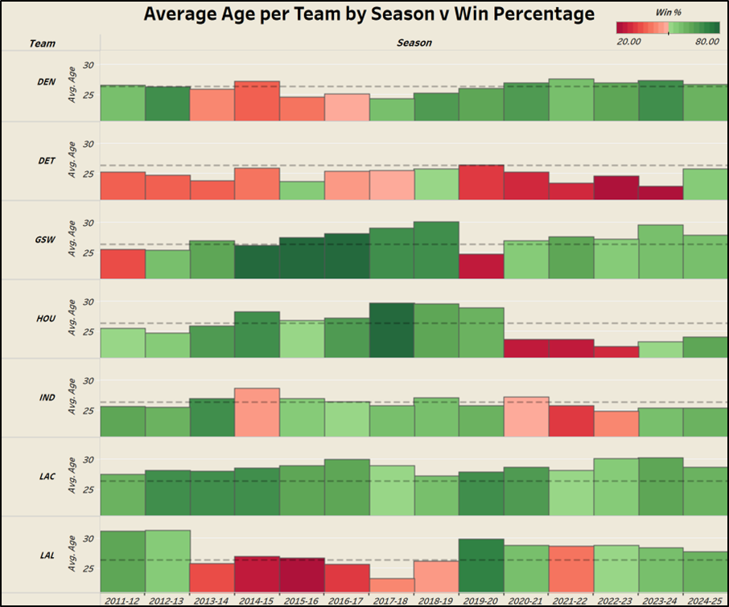
Figure 6b. DEN, DET, GSW, HOU, IND, LAC, LAL. LAC shows consistent veteran-heavy rosters with sustained winning.
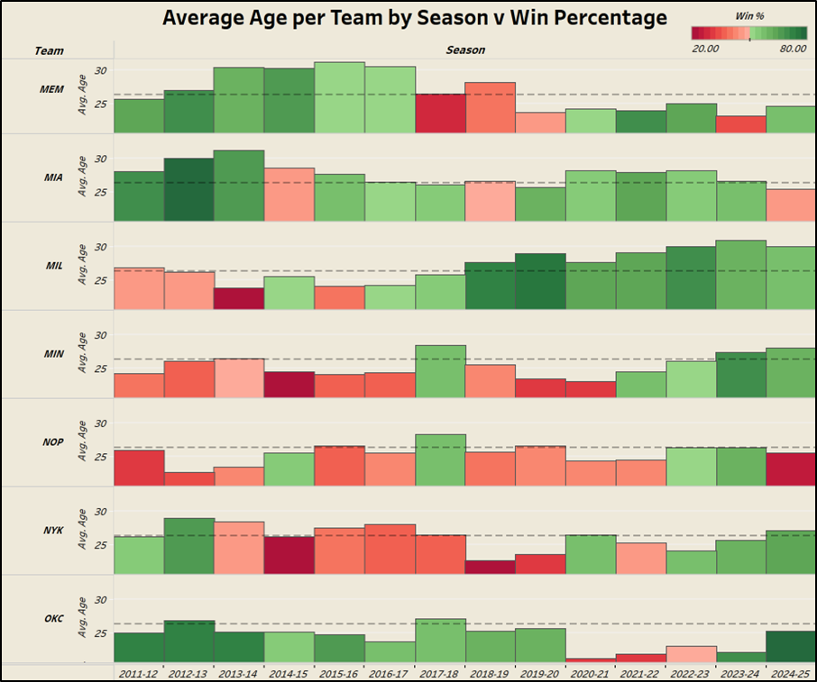
Figure 6c. MEM, MIA, MIL, MIN, NOP, NYK, OKC. OKC shows the draft-and-develop cycle: young rosters during rebuilds, winning as the core matures.
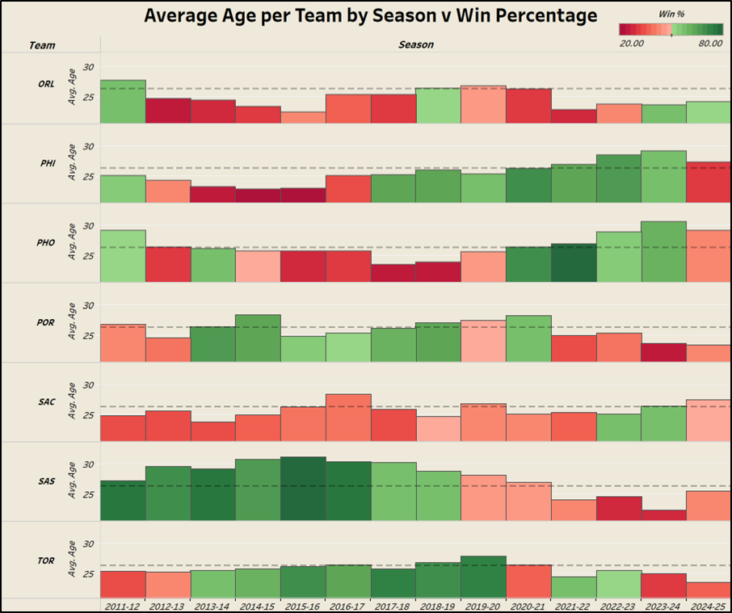
Figure 6d. ORL, PHI, PHO, POR, SAC, SAS, TOR. SAS shows a sharp shift from championship contender to youth rebuild after Kawhi's 2018 departure.
Three OLS Models, Three Levels of Analysis
Three OLS regression models were built to evaluate how NBA teams approach roster construction under modern CBA constraints. All on-court team metrics were adjusted relative to league averages for their respective seasons.
Model 1 · Player Contract Evaluation
The model explains 56.1% of salary share variation. Composite advanced stats (PER, WS/48, OBPM, DBPM) were removed after several iterations, reflecting the reality that front offices lean on visible production over black-box metrics. Points per game (+0.571% salary share) and assists per game (+0.535%) were the strongest individual drivers. Most strikingly, a point guard in the 2020-25 era earns 3.159% more salary share than a center in the 2011-15 era, quantifying the positional shift the league has undergone.
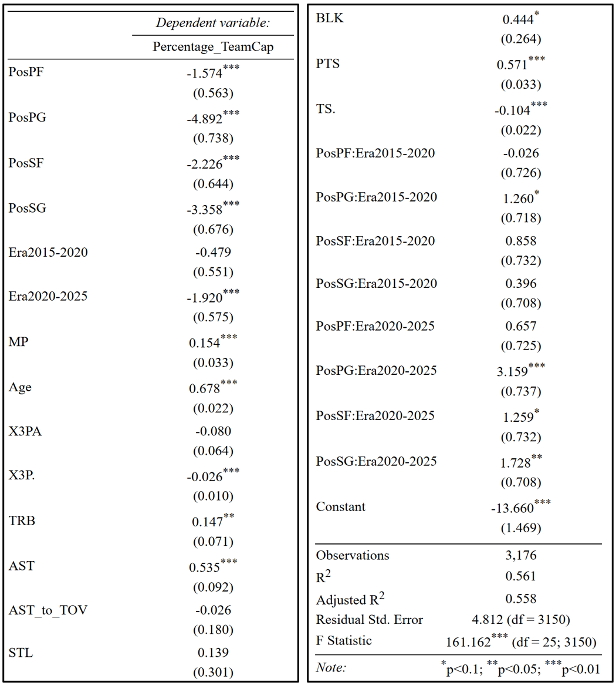
Table 6. OLS Regression Results — Player Contract Evaluation. N = 3,176, R² = 0.561, F = 161.162*** (df = 25; 3,150).
Model 2 · Team Playstyle and Win Percentage
Explaining 91.3% of win percentage variance, this model surfaces a critical asymmetry: committing a turnover (-4.3 pp) hurts more than forcing one gains (+3.1 pp). Ball security matters more than disruption. Notably, three-point attempt rate and three-point percentage are not statistically significant, meaning despite universal adoption, three-point volume alone does not reliably predict year-to-year success.
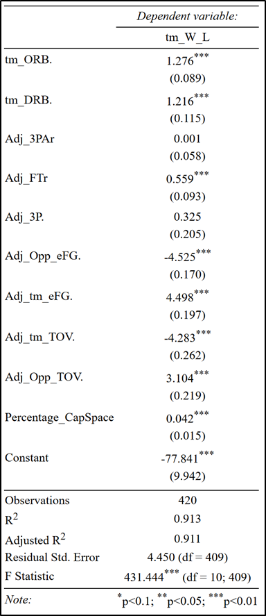
Table 7. OLS Regression Results — Team Playstyle and Team Success. N = 420, R² = 0.913, F = 431.444*** (df = 10; 409).
Model 3 · Offense vs Defense and Win Percentage
Three variables, 93.3% of variance explained. The key finding: net defensive rating (+2.896% win percentage per unit) edges out net offensive rating (+2.872%). The margin is narrow, but directionally consistent with the idea that elite defenses have a slight advantage over elite offenses at the team level.
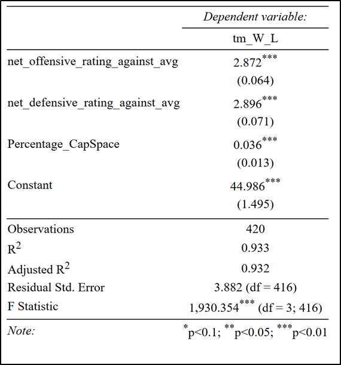
Table 8. OLS Regression Results — Offensive/Defensive Rating and Team Success. N = 420, R² = 0.933, F = 1,930.354*** (df = 3; 416).
Offense Earns Contracts. Defense Wins Games.
The NBA's financial and competitive logic pulls in two directions. What gets players paid and what actually wins are not the same thing. Across 14 seasons of data, a clear picture emerges.
PPG and APG drive salary share more than any other variables. Point guard value has surged while center value has declined, mirroring the league's pace-and-space evolution. Teams that land elite guards on rookie deals, like OKC with SGA or Golden State with Steph, gain a structural financial advantage.
Net defensive rating (+2.896% per unit) narrowly outpaces net offensive rating (+2.872%) in predicting win percentage. The margin is slim enough to say both sides of the ball matter, but the edge belongs to defense.
A one-unit increase in turnover rate costs 4.3 percentage points of win percentage. Forcing turnovers only gains 3.1 pp. The asymmetry is real: protecting the ball is more valuable than gambling for steals.
Three-point attempt rate and accuracy are statistically insignificant predictors of team success on a year-to-year basis. The strategy is universal now, which may be exactly why it no longer differentiates winners from losers.
NBA teams spend like offense is everything, then win with defense. The data suggests the most durable competitive advantages come from finding elite defensive contributors at below-market value, building around rookies before their pay scales to their production, and protecting the ball more carefully than the other team. Scoring gets the headlines. Discipline wins the rings.